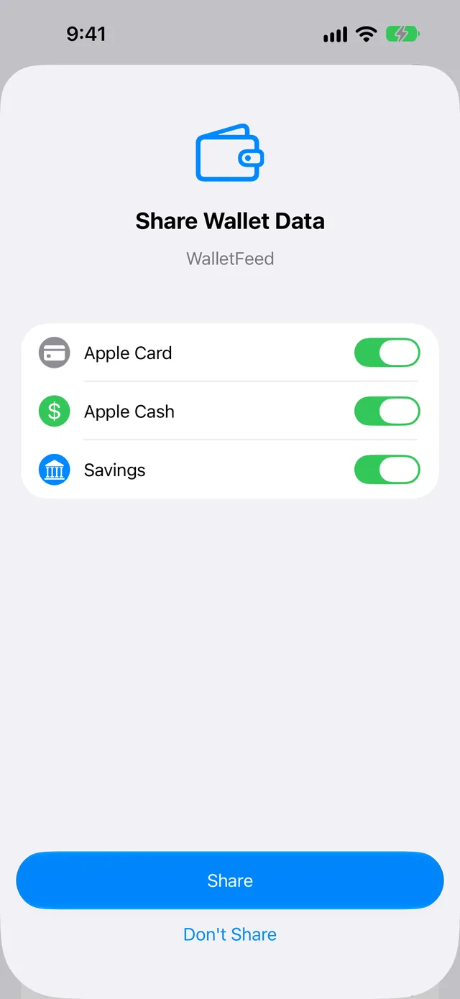

See Apple Card spending by category
WalletFeed shows your Apple Card spending by category on your iPhone. The Spending tab is a spending summary of this month. It shows the total, a chart with a bar for each day, the categories and the merchants with the largest totals.
Download WalletFeed on the App Store
Wallet also has a spending summary for Apple Card, for a week, a month or a year.
Spending and categories in Wallet
Apple gives these steps for the spending summary in See your Apple Card spending history:
- On your iPhone, open the Wallet app.
- Tap Apple Card.
- Below Card Balance, tap the Monthly Activity button.
- Tap Week, Month or Year.
- To show the period before, swipe right.
To find the transactions of a category in Wallet, tap the Search button at the bottom of the Apple Card screen. Apple says that you can search "by category, merchant, or location".
Change the category of a transaction in Wallet
Apple gives these steps on the same page:
- In the Wallet app, tap Apple Card.
- Tap a transaction, then tap it again.
- At Category, tap the category of the transaction.
- Tap the new category.
To change more than one transaction, Apple gives the button Select Multiple Transactions.
WalletFeed does not read the category that Wallet shows. WalletFeed sets its own category from the merchant category code of each transaction (refer to Categories and totals).
The categories on this page are not the Daily Cash percentages. For Daily Cash, refer to Apple Card on the Apple website.
Before you start
You must have these items:
- An iPhone with iOS 26 or a newer version
- Your Apple Card in Wallet on your iPhone
- WalletFeed, from the App Store
- An iPhone that can use Apple Intelligence, with Apple Intelligence active (necessary only for Ask Spending and for Search with Apple Intelligence).
WalletFeed is available only in the US. You can use Spending without WalletFeed Pro.
Step 1: Give WalletFeed access to your Apple Card
If WalletFeed shows your transactions, go to Step 2.
-
On your iPhone, open WalletFeed.
-
If WalletFeed shows Welcome to WalletFeed, tap Continue.

-
If WalletFeed shows No Cards, tap Choose Accounts.
-
When iOS shows your Wallet accounts, set the switch for your Apple Card to on.

-
Tap Share.
WalletFeed can read only the accounts that you select. You can change the accounts in the Settings app, in Privacy & Security › Wallet › WalletFeed.
Step 2: Read the total for this month
-
Tap Spending at the bottom of the screen.

-
To read the total for one day, touch and hold the chart, then move your finger slowly to that day.
Spending shows the date and the total for that day.
The top part of Spending shows these items:
- The name of the month and the total of your purchases in this month
- An arrow and the change from the month before this month, for example "70% vs Sep"
- A chart with a bar for each day of the month
- The Monthly Summary, a short text below the chart.
WalletFeed compares the same days of the two months. For example, on October 20, it compares October 1 to 20 with September 1 to 20.
On the chart, the dashed line with the label "Avg $45" shows the average for each day, from the first day of the month to today.
If your iPhone can use Apple Intelligence, Apple Intelligence writes the Monthly Summary from the results that WalletFeed calculates. Apple Intelligence can write a number that is not correct. The total, the chart and the lists come from WalletFeed. Without Apple Intelligence, WalletFeed writes the Monthly Summary. This summary usually gives the total and the change from the month before this month.
To get the Monthly Summary from WalletFeed on an iPhone with Apple Intelligence, do these steps:
-
Tap Settings (the gear button) at the top of the screen.
-
In the Privacy & Security section, set Summarize Spending to off.

-
Tap Done.
The Spending widget shows the total for this month and the total for the same days of the month before this month. You can put the widget on the Home Screen or the Lock Screen.
Step 3: Find the categories and the merchants
-
On Spending, scroll to Categories, which is below Accounts.
Categories shows a bar with one color for each category. Below the bar, each row shows a category and its total for this month.
-
Scroll to Merchants.
Merchants shows the five merchants with the largest totals for this month.

In Categories, WalletFeed shows your five largest categories. If you have more than five categories, or transactions in Other, the last row is Other. This row shows the total of the remaining categories and the transactions in Other.
Between Categories and Merchants, Spending also shows Recurring Charges, and it can show Monthly Installments.
Step 4: Show last month or the month before it
-
On the total and the chart, swipe to the right with a fast movement of your finger.
Spending shows the total and the chart of last month. Categories and Merchants also show last month.
-
To show the month before last month, swipe to the right again.
-
To go back to this month, swipe to the left.
The total of a month before this month is the total of the full month. For more information, refer to Show a month before this month.
Step 5: Use Ask Spending for a different period
If your iPhone can use Apple Intelligence, and Apple Intelligence is active, Spending has the field Ask about your spending at the top. The name of this feature is Ask Spending. Without Apple Intelligence, Spending shows only this month and the two months before it.
-
At the top of Spending, tap Ask about your spending.
-
Type your text, for example
Spending by category last month. -
Tap Go on the keyboard.
The result has a chart with a bar for each category. Below the chart, WalletFeed shows Categories, Merchants and the transactions.
-
To type a different text, tap Clear (the x button).
Spending shows this month again.
-
Tap Ask about your spending.
-
Type a category and a period, for example
Dining this month vs last. -
Tap Go.

Above the result, WalletFeed shows how it read your text, for example "Dining · This month · vs last month". When WalletFeed shows no result, it shows an example below the field. If you tap the example, WalletFeed puts the text of the example in the field.
You can type a period, for example today, this week, last 30 days, last month, last 3 months, this year or the name of a month. To compare with the month before this month, you can add vs last month.
Apple Intelligence operates on your iPhone. When Apple Intelligence reads your text, it gets only that text. WalletFeed calculates the numbers in the result. Then Apple Intelligence writes the short text below the chart from these numbers.
Find the transactions in a category
Search finds the transactions in all the Wallet accounts that WalletFeed can read.
-
Tap the search button at the bottom of the screen.
-
In Categories, tap a category.
Search puts the name of the category in the search field. Then Search shows the transactions in that category. Above the transactions of each month, Search shows the name of the month.
If your iPhone can use Apple Intelligence, you can also type a category and a period:
-
In the search field, type your text, for example
Groceries last month. -
Tap Search on the keyboard.
Above the transactions, Search shows the number of transactions and their total.

Categories and totals
WalletFeed sets the category of each transaction from its merchant category code (MCC). Wallet supplies the MCC with the transaction. If a transaction has no MCC, or an MCC that WalletFeed does not know, its category is Other.
WalletFeed uses these 13 categories:
| Category | Merchant category codes |
|---|---|
| Groceries | 5411, 5422, 5441, 5451, 5462 and 5499 |
| Dining | 5811 to 5814 |
| Transport | 4121, 4131, 4784, 4789 and 7523 |
| Fuel | 5541, 5542, 5552 and 5983 |
| Travel | 3000 to 3299, 3351 to 3999, 4111, 4112, 4411, 4511, 4722, 7011, 7012, 7512, 7513 and 7519 |
| Shopping | The other codes from 5000 to 5999 |
| Entertainment | 7832, 7841 and 7911 to 7999 |
| Subscriptions | 4899 and 5815 to 5818 |
| Utilities | 4812, 4814, 4816 and 4900 |
| Health | 5912, 5975, 5976 and 8011 to 8099 |
| Services | The other codes from 7000 to 7999, and 8100 to 8999 |
| Cash & Transfers | 6010, 6011, 6051 and 6540 |
| Other | No code, or a code that is not in this table |
The CSV file from Export CSV has the category and the MCC of each transaction in the Category and MCC columns.
WalletFeed calculates all the totals in Spending with these rules:
- Purchases and fees increase the totals. Refunds decrease the totals.
- Transfers and payments are not in the totals.
- Pending purchases are in the totals. Declined purchases are not in the totals.
- The totals include the purchases from all the Wallet accounts that WalletFeed can read, for example Apple Cash.
WalletFeed reads your transactions from Wallet on your iPhone when it shows Spending. WalletFeed does not keep a copy of your transactions.
If there is a problem
If Spending shows "Wallet Access Off"
WalletFeed does not have access to Wallet. After the first time that iOS shows your Wallet accounts, you can give access only in the Settings app.
- On your iPhone, open the Settings app.
- Tap Privacy & Security › Wallet › WalletFeed.
- Select your Apple Card.
- Open WalletFeed again.
If Spending shows "No Spending"
WalletFeed found no purchases for this month in the Wallet accounts that it can read. On the first days of a month, WalletFeed can show this message.
If your iPhone can use Apple Intelligence, you can read the totals for the month before this month:
- At the top of Spending, tap Ask about your spending.
- Type
Spending by category last month. - Tap Go.
To give WalletFeed access to more Wallet accounts, do these steps:
- On your iPhone, open the Settings app.
- Tap Privacy & Security › Wallet › WalletFeed.
- Select more Wallet accounts.
- Open WalletFeed again.
If Spending shows "Couldn't Read Wallet"
WalletFeed did not get your transactions from Wallet. For the same problem, Ask Spending shows "Couldn't read Wallet. Pull down to try again."
-
At the top of Spending, swipe down.
Then WalletFeed reads Wallet again.
If Spending does not show "Ask about your spending"
WalletFeed shows this field only on an iPhone that can use Apple Intelligence, with Apple Intelligence active.
- Make sure that your iPhone can use Apple Intelligence.
- In the Settings app on your iPhone, activate Apple Intelligence.
Without Apple Intelligence, Spending shows this month. Search shows the transactions in a category.
If Ask Spending shows "Couldn't read this."
WalletFeed could not read your text, or WalletFeed cannot show that result. WalletFeed cannot show these results:
- A result that compares two categories or two merchants, for example
Dining vs Groceries - A result without the transactions of one category or one merchant, for example
not Uberorexcept Dining - A result with two limits for a purchase, for example
over $20 and under $50.
To get a result, do these steps:
- Tap Clear (the x button).
- Tap Ask about your spending.
- Type a shorter text with one category and one period, for example
Travel this year. - Tap Go.
If WalletFeed shows no transactions for a month before this month
Wallet gives WalletFeed the transactions of an account only from the start date that you selected for that account.
- On your iPhone, open the Settings app.
- Tap Privacy & Security › Wallet › WalletFeed.
- For your Apple Card, select a start date before that month.
- Open WalletFeed again.
 Scan with your iPhone
Scan with your iPhone
Related
Updated November 26, 2026